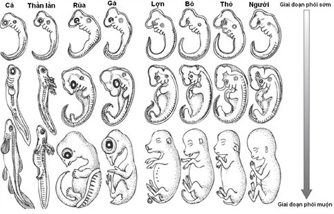

Mở đầu
Nhà vật lý Albert Einstein từng nói: “Nếu có một tôn giáo nào dung hòa được với khoa học hiện đại, thì đó là Phật giáo.”
Cũng chung nhận định ấy, nhà thiên văn học nổi tiếng Carl Sagan từng thừa nhận rằng “Phật giáo là tôn giáo duy nhất có thể thoải mái đối thoại với khoa học hiện đại.”
Bởi vậy, khi ta nói đến việc “thay đổi vận mệnh” theo tinh thần Đạo Phật, đó không phải là cầu cúng mê tín, mà là hiểu quy luật vận hành của:
Tâm – Năng lượng – Nhân quả
Chúng ta cứ ngỡ cuộc đời là một con đường thẳng tắp. Nhưng thực tế, nó đầy ngã rẽ, khúc quanh, đôi khi chỉ một biến cố nhỏ cũng đủ làm thay đổi tất cả.
Ai dám chắc mình không có ngày nằm trên giường bệnh, bất lực nhìn cuộc sống trôi qua?
Ai dám đảm bảo hạnh phúc hôm nay sẽ không vụn vỡ vào một sáng mai nào đó?
Cuộc đời là vậy, vô thường, biến động, không đoán trước.
Nhưng điều kỳ diệu là: chúng ta vẫn có thể chủ động thay đổi.
Trong thế giới này, có những người dường như bước vào đời với mọi điều kiện thuận lợi. Họ có trí tuệ sắc bén, ngoại hình dễ nhìn, sinh trưởng trong gia đình yêu thương, được học hành đến nơi đến chốn, sự nghiệp hanh thông, tài chính ổn định.
Trong khi đó, cũng có biết bao người khác sinh ra đã phải đối mặt với bệnh tật, nghèo đói, bị ngược đãi, chịu bất công, học hành không đến nơi đến chốn và vật lộn với cuộc sống từng ngày.
Điều gì quyết định sự chênh lệch sâu xa ấy?
Đạo Phật lý giải điều này qua quy luật nhân quả và luân hồi, một nguyên lý cốt lõi của vũ trụ mà Đức Phật đã giác ngộ và giảng dạy.
Theo đó, đời sống hiện tại của mỗi con người không chỉ là kết quả của những nỗ lực trong đời này, mà còn là sự tiếp nối tự nhiên của vô lượng hành vi, lời nói, suy nghĩ đã từng tạo tác trong vô số kiếp trước.
Những gì ta đang trải qua hôm nay, dù là niềm vui hay nỗi khổ, đều không phải ngẫu nhiên. Tất cả đều là kết quả của "nghiệp", tức những nhân đã gieo trong quá khứ, nay trổ quả.
Khi một người sống trong đủ đầy, an nhiên, dễ gặp may mắn, dễ được người thương mến và kính trọng, phần nhiều là vì họ đã từng gieo những nhân lành từ nhiều kiếp trước.
Có thể họ từng biết giúp người, từng hy sinh cho tha nhân, từng sống trung thực và từ bi, từng tu tập tâm hồn mình.
Những nghiệp thiện ấy tích lũy dần như ánh sáng gom lại thành mặt trời, chiếu soi cho đời sống hiện tại của họ sáng rỡ và nhẹ nhàng.
Ngược lại, có những người sống giữa muôn vàn thử thách: sinh ra trong gia đình không hạnh phúc, từ bé đã thiếu thốn, lớn lên lại mắc bệnh, không được ai yêu thương, vất vả trong mưu sinh, thất bại trong học hành và sự nghiệp.
Họ dễ rơi vào tâm trạng bi quan và than thân trách phận.
Nhưng nếu nhìn sâu hơn, ta sẽ thấy rằng những đau khổ ấy không phải là sự trừng phạt của một thế lực nào đó, mà chỉ đơn thuần là hậu quả của những hành động bất thiện từng gây ra trong quá khứ xa xăm.
Có thể trong những kiếp trước, họ đã từng hại người, ích kỷ, tham lam, khinh thường người khác, sống bằng sự dối trá hay sát sinh vô độ.
Nghiệp ấy không mất đi đâu cả. Nó chỉ chờ đủ duyên để trổ quả.
Một ví dụ có thật dễ khiến người ta suy ngẫm: Có người sinh ra trong một gia đình giàu có, nhưng từ nhỏ đã mắc bệnh hiểm nghèo.
Cha mẹ có thể lo cho con mọi thứ về vật chất, nhưng vẫn bất lực trước sức khỏe mong manh của con.
Có người khác lại sinh ra khỏe mạnh, thông minh, chăm chỉ, nhưng cuộc sống luôn gặp rủi ro, bị hiểu lầm, nỗ lực mãi không thành công.
Những sự bất công này, nếu chỉ nhìn ở hiện tại, sẽ không thể lý giải.
Nhưng nếu ta tin vào sự vận hành sâu xa của nghiệp lực, ta sẽ hiểu: không có gì là vô cớ.
Không có ai may mắn một cách ngẫu nhiên, và cũng không ai khổ đau một cách vô lý.
Do đó, khi gặp nghịch cảnh, điều quan trọng không phải là than vãn, trách móc số phận, hay so sánh mình với người khác.
Cũng đừng hỏi những câu như: “Tại sao tôi lại khổ đến thế?”, “Tại sao người khác sung sướng hơn tôi?”, “Tại sao tôi làm nhiều mà chẳng được gì?”
Bởi lẽ, những câu hỏi ấy sẽ không giúp ta thay đổi được thực tại.
Thay vào đó, hãy tự hỏi: “Mình đã gieo những gì trong quá khứ?”, “Mình đang sống như thế nào trong hiện tại?”, và “Mình có thể thay đổi điều gì từ hôm nay để gieo lại những hạt giống tốt lành hơn?”
Bằng cách sống tỉnh thức hơn, gieo đúng những nhân lành trong từng suy nghĩ, lời nói, hành động, ta dần chuyển hóa cuộc sống của chính mình.
Khi sống đúng, tâm an; khi tâm an, đời sẽ tự khởi sắc.
Chúng ta có thể từng bước xây dựng một cuộc sống giàu có và bình an từ trong ra ngoài, không phải kiểu thịnh vượng mong manh dễ mất, mà là sự vững chãi, sâu sắc từ nội tâm đến hoàn cảnh bên ngoài.
Tự soi xét chính mình
Dành thời gian ngồi yên tĩnh, có thể kèm theo nhạc thiền nhẹ, và viết ra các câu trả lời dưới đây vào một cuốn sổ riêng để quan sát bản thân một cách sâu sắc.
1. Về sức khỏe
- Tôi có hay ốm đau, bệnh tật, hay thân thể tôi khỏe mạnh, nhanh nhẹn?
- Tôi có từng gây hại cho sinh mạng khác, con người hoặc súc vật, vì lợi ích riêng?
- Tôi có biết trân quý thân thể mình không? Hay tôi từng phung phí sức khỏe vào ăn chơi, rượu chè, giận dữ, thức khuya, lo âu?
2. Về trí tuệ
- Tôi có dễ tiếp thu, học nhanh, hiểu sâu? Hay tôi cảm thấy đầu óc mình hay mờ mịt, khó tiếp thu, kém tập trung?
- Tôi đã từng biết ơn những người dạy mình chưa? Hay tôi từng coi thường người khác, nói năng kiêu mạn, khoe khoang tri thức giả tạo?
- Tôi có từng cố tình làm người khác hiểu sai sự thật để trục lợi?
3. Về tài chính và công việc
- Tôi có đủ ăn, đủ mặc, dư dả? Hay tôi luôn thiếu thốn, vay mượn, nợ nần?
- Trong quá khứ tôi có biết bố thí, chia sẻ, cúng dường không? Hay tôi từng tham lam, ích kỷ, keo kiệt, gian dối trong tiền bạc?
- Tôi có từng làm việc với tâm lười biếng, dối trá, trốn tránh trách nhiệm?
4. Về các mối quan hệ
- Tôi có được nhiều người thương quý, giúp đỡ, ủng hộ không? Hay tôi hay bị hiểu lầm, phản bội, bị ghét bỏ?
- Tôi có từng gây chia rẽ, nói lời tổn thương, lừa dối ai? Có từng đối xử tệ với người từng giúp mình?
- Tôi có hay nghĩ tốt và nói tốt về người khác không? Hay tôi thường phê phán, ganh tỵ, nói xấu?
5. Về tính cách
- Tôi có thường nóng giận khi không được như ý không? Hay im lặng ngoài mặt nhưng trong lòng lại oán giận?
- Tôi có từng khoe tài, khoe của, khoe nhan sắc, khoe con, khoe cuộc sống lên mạng xã hội?
- Khi làm được việc tốt, tôi có thật sự vô tư, hay trong lòng vẫn muốn được công nhận?
Khi bạn bắt đầu tự soi xét bản thân một cách thành thật, bạn sẽ dần nhìn thấy bức tranh nghiệp của chính mình, không còn mơ hồ, mà rõ ràng như thể có tấm gương phản chiếu nội tâm.
Nếu hiện tại bạn đang sống trong sự đủ đầy, khỏe mạnh, an vui đó là điều đáng trân trọng.
Nhưng cũng xin đừng quá mừng, vì trong cõi đời vô thường này, mọi điều đều có giới hạn, kể cả phước báu.
Hãy tưởng tượng phước đức như một hũ vàng vô hình mà bạn mang theo bên mình qua nhiều kiếp sống.
Mỗi lần bạn hưởng thụ là đang rút dần những đồng vàng ra xài.
Một ngày nào đó, nếu không bồi đắp thêm, hũ ấy sẽ cạn.
Và khi đã cạn, thì dù muốn hạnh phúc, cũng không còn đủ “vốn” để mua.
Lúc ấy, người ta lại than trách: “Tại sao cuộc đời tôi bỗng khổ đến thế?”
Ngược lại, nếu hiện giờ bạn đang sống trong những ngày tháng nhiều thử thách bệnh tật, nghèo khó, cô đơn hay bất công cũng xin đừng vội oán trách.
Vì giờ đây, bạn đã hiểu: đó không phải là sự trừng phạt, mà là một giai đoạn trả nghiệp, là cái giá để gỡ bỏ những gút mắc cũ mà chính mình đã vô tình buộc chặt.
Khi bạn chịu nhìn vào, học từ đó, làm mới tâm mình, thì cũng chính là lúc ánh sáng bắt đầu rọi vào cuộc đời bạn.
Sau mưa trời sẽ sáng, nếu bạn kiên trì bước tiếp.
Vì vậy, nếu hiện tại bạn đang sống trong điều tốt đẹp, hãy biết giữ gìn và tiết chế, như người khôn ngoan cất giữ hũ vàng quý báu, tiêu ít, tích nhiều.
Tiêu ít tức là không phung phí phước báu vào những ham muốn vô nghĩa.
Tích nhiều là sống thiện lành hơn nữa, giúp người, khiêm tốn, làm việc tốt một cách âm thầm.
Còn nếu bạn đang trong giai đoạn gian nan, thì chính lúc này là thời điểm tốt nhất để bắt đầu gieo lại những hạt phước mới, từng việc nhỏ, từng suy nghĩ thiện lành, từng lần nhẫn nại, từng lần không buông lời oán trách, tất cả đều đang đổ thêm vàng vào hũ báu vô hình của bạn.
Có thể hôm nay chưa thấy, nhưng mai kia, khi gió đổi chiều, bạn sẽ biết ơn những ngày tháng khó khăn này biết bao.
Vì đời là một chuỗi vay trả, tích lũy, và gieo gặt.
Sớm hiểu điều đó, bạn sẽ biết sống khác đi, chậm hơn, và hạnh phúc thật sự hơn.
Câu chuyện Liễu Phàm
Vào thời nhà Minh, có một chàng trai tên là Viên Liễu Phàm. Từ nhỏ, cậu thông minh, chăm học và có chí tiến thân.
Năm 17 tuổi, cậu gặp một vị tiên sinh họ Khống, một người giỏi thuật số, đặc biệt là bói toán theo Kinh Dịch.
Vị tiên sinh này sau khi tính toán tỉ mỉ đã nói cho Liễu Phàm biết rõ ràng về vận mệnh cả đời của mình gồm rất nhiều nội dung kể cả nhỏ nhặt nhất, đặc biệt là có 3 ý chính: sẽ chỉ sống đến năm 53 tuổi, thi đỗ tú tài năm 20 tuổi nhưng không tiến xa hơn, và suốt đời không có con.
Ban đầu Liễu Phàm bán tín bán nghi, nhưng rồi theo năm tháng, mọi điều vị tiên sinh nói đều ứng nghiệm chính xác, kể cả những điều nhỏ nhặt nhất.
Ông đỗ tú tài đúng năm 20 tuổi, sau đó thi cử mãi không đỗ cao hơn. Sức khỏe yếu, vợ chồng sống mà không có con.
Ông dần dần tin rằng số phận là định sẵn, con người không thể thay đổi được.
Từ đó, ông sống an phận, không bon chen, không cố gắng gì thêm vì ông nghĩ rằng dù có cố cũng bằng không.
Cho đến một ngày, Liễu Phàm đến chùa Nam Hoa ở Quảng Đông và gặp được một vị thiền sư tên là Vân Cốc.
Sau khi nghe Liễu Phàm kể chuyện tiên đoán vận mệnh, thiền sư Vân Cốc mỉm cười và nói: “Số là cái đã định, nhưng tâm có thể làm thay đổi số. Tướng tùy tâm sinh, cảnh tùy tâm chuyển. Nếu ông tu tâm dưỡng tính, hành thiện tích đức, trời đất cũng phải cảm động mà thay đổi vận mệnh cho ông.”
Vân Cốc dạy cho ông ba nguyên tắc để cải số: thứ nhất, ngừng làm điều ác; thứ hai, siêng làm việc thiện; thứ ba, thành tâm sửa lỗi, mỗi ngày phản tỉnh chính mình.
Liễu Phàm nghe xong, như người trong mộng vừa tỉnh, liền ghi khắc những lời ấy trong tim và bắt đầu một cuộc sống hoàn toàn khác.
Từ đó, mỗi ngày ông đều dành thời gian tĩnh tọa, xét mình, sám hối lỗi lầm và tìm cách sửa đổi.
Ông lập một cuốn sổ công đức, mỗi lần làm một việc thiện dù nhỏ cũng ghi lại.
Ông bắt đầu chủ động giúp đỡ người khác, làm việc nghĩa, nói lời lành.
Ông không còn sống an phận nữa mà nỗ lực học hành, thi cử, cống hiến.
Kỳ lạ thay, chỉ vài năm sau, vận mệnh ông thay đổi thật sự.
Ông thi đỗ cử nhân, rồi tiến sĩ, được bổ làm quan trong triều.
Vợ ông sinh con trai khỏe mạnh.
Ông sống thọ đến 74 tuổi hoàn toàn vượt qua mọi giới hạn mà thầy bói từng dự đoán.
Từ câu chuyện này chúng ta có thể thấy, mọi sự đều có thể thay đổi kể cả vận mệnh.
Hạnh phúc hay khổ đau đều do mình quyết định.
Và Liễu Phàm đã để lại bốn điều giáo huấn quan trọng dành cho con trai, cũng là tinh túy của kinh nghiệm tu thân và cải vận cả đời ông.
Thứ nhất là Lập mệnh chi học, tức là học cách hiểu rõ và làm chủ vận mệnh.
Ông nhấn mạnh rằng vận mệnh tuy có vẻ như đã được định sẵn, nhưng kỳ thực vẫn có thể thay đổi nếu con người biết tu tâm, sửa tính, hướng thiện.
Nhận thức này giúp mỗi người không buông xuôi cho số phận, mà tự mình đứng lên làm chủ cuộc đời mình.
Thứ hai là Cải mệnh chi pháp, nghĩa là phương pháp để thay đổi số mệnh.
Ông nêu rõ ba bước cốt lõi: ngừng làm điều ác, siêng làm việc thiện, và thành tâm sửa lỗi.
Không chỉ thay đổi hành vi bên ngoài, mà cần chuyển hóa cả tâm ý bên trong, lấy sự phản tỉnh mỗi ngày làm gốc.
Thứ ba là Tích thiện chi phương, tức là cách hành thiện và tích đức.
Việc thiện không nhất thiết phải lớn lao, mà là những điều nhỏ bé, âm thầm, liên tục, làm từ lòng chân thành.
Từng việc lành giống như gieo một hạt giống tốt, lâu ngày tất sẽ kết quả phúc báo.
Người tích thiện đủ sâu thì vận mệnh tự đổi.
Thứ tư là Khiêm đức chi hiệu, tức là hiệu quả và sức mạnh của đức tính khiêm tốn.
Khiêm tốn không chỉ là cách sống đẹp, mà còn là nền tảng giúp người có đức vững vàng, không tự cao, không bị danh lợi cuốn trôi.
Đức khiêm nhường như đất thấp đón nước, càng thấp càng dày phúc.
Bốn điều giáo huấn ấy, nhìn qua tưởng là đạo lý xưa cũ, nhưng thực chất là kim chỉ nam vững chắc cho bất kỳ ai muốn cải đổi chính mình, xây dựng một đời sống có giá trị và an lành lâu dài.
Bạn nên một lần đọc cuốn Liễu Phàm Tứ Huấn để có một góc nhìn tổng thể hơn, và chi tiết hơn nữa.
Cách để sống thọ
Theo lời Phật dạy, con người sống thọ hay yểu mệnh không hoàn toàn do di truyền hay điều kiện y học, mà chủ yếu do nghiệp lực chi phối.
Trong muôn vàn loại nghiệp, sát sanh là một trong những ác nghiệp nặng nề nhất và ảnh hưởng trực tiếp đến thọ mạng của chúng sinh.
Người thường sát sanh, dù là giết người, giết thú hay giết côn trùng, đều đang tạo ra một thứ nhân xấu dẫn đến quả báo chết yểu, nhiều bệnh tật, kinh sợ, bị trả thù hoặc phải sinh vào cảnh giới khổ đau.
Ngược lại, người biết yêu thương mạng sống, biết cứu giúp sinh vật khi bị nguy khốn, biết phóng sinh, biết hộ trì cho sự sống, thì người ấy đã gieo một nhân thiện lành, sẽ gặt quả báo sống thọ, khỏe mạnh, an ổn và được người thương kính.
Trong nhiều kinh điển, Đức Phật nhấn mạnh vai trò của tâm từ bi.
Tâm từ là nguồn gốc của mọi thiện pháp, là ánh sáng có thể xóa tan sự tăm tối của sân hận và bạo lực.
Khi tâm người có từ bi, họ sẽ tự nhiên không thể giết hại.
Và khi không sát sanh, họ cũng không gieo sợ hãi cho ai, nên bản thân cũng được sống trong sự bình yên.
Từ bi là gốc rễ của công đức, và công đức là nền tảng của tuổi thọ, của sắc đẹp, của an lạc và trí tuệ.
Người có lòng từ, mỗi khi thấy chúng sinh khổ đau, liền khởi tâm thương và tìm cách cứu giúp.
Hành động đó, dù nhỏ, vẫn có sức chuyển nghiệp.
Chỉ cần một lần cứu một con cá mắc cạn, một lần cưu mang một con chim gãy cánh, một lần nhẹ tay tha mạng cho côn trùng, người ấy đã gieo một hạt giống lành trong tâm, và hạt giống đó sẽ lớn lên thành quả lành trong tương lai.
Cứu mạng sống là một việc lớn lao, dù đôi khi hình thức rất nhỏ.
Người thường xuyên phóng sinh tức là mua vật sắp bị giết để thả về tự nhiên, không chỉ cứu lấy một mạng sống, mà còn mở rộng lòng từ của chính mình.
Việc phóng sinh nếu làm bằng tâm thương xót chân thành thì sẽ tạo ra phước báu lớn, không chỉ giúp ta sống thọ mà còn chuyển hóa tâm tánh trở nên nhẹ nhàng, vui vẻ, cảm thông.
Tuy nhiên, phóng sinh phải đi đôi với trí tuệ.
Nếu làm chỉ để cầu phước mà không xét hoàn cảnh, có khi lại vô tình tiếp tay cho người trục lợi, làm tổn hại thêm chúng sinh.
Vì thế, phóng sinh đúng nghĩa là xuất phát từ lòng từ bi và trí tuệ, chứ không phải chỉ là hình thức mê tín.
Cổ nhân có câu: "Muốn sống thọ, chớ giết hại."
Trong nhiều câu chuyện nhân quả, những người giết nhiều thì chết sớm, còn người hay cứu mạng thì sống lâu, ít bệnh.
Một ông lão ở quê nghèo sống qua hơn chín mươi tuổi, ai cũng hỏi bí quyết, ông chỉ nói: "Cả đời tôi chưa từng giết một con gì, thấy rắn, chuột, chim, cá bị nạn, tôi đều tìm cách cứu."
Câu nói ấy tưởng đơn giản, nhưng chính là một bản kinh sống về nhân quả.
Trong khi nhiều người lo tìm thuốc bổ, ăn uống kiêng khem, nhưng vẫn bệnh tật và yểu mệnh, thì họ quên mất gốc rễ của bệnh và thọ chính là nghiệp và tâm.
Sát sanh là nghiệp ác tổn thọ, cứu sinh là nghiệp lành tăng thọ.
Không cần lý luận cao siêu, chỉ cần soi chiếu lại tự thân, ta sẽ thấy mỗi lần khởi tâm thương xót và cứu giúp, lòng ta ấm áp, thanh thản hơn, còn mỗi lần giết hại hay làm đau người khác, tâm ta bất an, lo lắng.
Đó chính là tiếng nói của nghiệp, là sự thật mà ai cũng có thể kiểm chứng ngay trong đời sống.
Bạn có từng nhìn thấy hình ảnh phôi thai trong môn Sinh học không?

Ở giai đoạn đầu, phôi người trông không khác gì phôi cá, thằn lằn, bò hay thỏ, đều có đuôi, khe mang, có hình dạng giống nhau.
Một sự trùng hợp kỳ lạ khiến ta giật mình. Tại sao một sinh linh làm người lại khởi đầu giống hệt các loài vật?
Có thể đó không chỉ là kết quả của tiến hóa mà còn là một lời nhắc nhở sâu sắc về mối liên hệ kỳ diệu giữa muôn loài.
Trong giáo lý nhà Phật, mọi sự sống đều chuyển xoay trong vòng luân hồi và chịu chi phối bởi luật nhân quả.
Chỉ một niệm xấu ác khởi sinh cũng có thể khiến con người rơi vào cảnh giới thấp kém, tái sinh thành loài vật.
Mà khi đã thành súc sinh thì con đường trở lại làm người vô cùng khó khăn.
Hãy thử nhìn quanh thế giới, nơi có khoảng tám tỷ con người nhưng lại có hàng triệu tỷ tỷ loài vật.
Con số ấy đủ để thấy rằng được sinh làm người là một điều vô cùng hiếm hoi và quý giá, chứ đừng nói đến là được sinh ra lành lặn, khỏe mạnh, sinh ra trong 1 nơi yên bình, ấm no.
Chỉ khi làm người, ta mới đủ trí tuệ để phân biệt đúng sai, thiện ác.
Chỉ khi làm người, ta mới có cơ hội tu tập, sửa đổi, chuyển hóa tâm thức.
Nhưng nếu sống mà gieo nghiệp sát sanh, gây đau đớn cho sinh linh khác thì chính thân người ấy cũng không giữ được lâu.
Và điều đáng sợ nhất là ta không hề biết con vật mà mình giết hôm nay có thể chính là một người nào đó từng quen biết, từng yêu thương, từng gắn bó với ta trong quá khứ.
Sát sanh một sinh vật vô tội không khác gì giết một mạng người.
Đó là hành vi tạo nghiệp rất nặng và đồng thời cũng là đang giết đi chính cơ hội tiếp tục được làm người của chính mình trong tương lai.
Vì thế, đừng bao giờ xem nhẹ một việc làm tưởng như nhỏ nhặt.
Một hành vi ác, một ý nghĩ bất thiện có thể là khởi đầu cho muôn kiếp khổ đau.
Do vậy, nếu muốn sống thọ, sống khỏe, sống vui, hãy khởi đầu bằng cách ngừng sát sanh và tập phóng sanh, dễ nhất là thả cá, còn dễ hơn nữa thì đừng giết hại bất kỳ con vật nào dù bé nhỏ nhất như con muỗi, con kiến, công đức đó cũng ngang với việc phóng sanh.
Một hành động thiện, dù nhỏ, nếu kiên trì mỗi ngày, sẽ tích lũy thành đại phước.
Ngoài ra cần tập thói quen sống lành mạnh, ăn ít đồ ngọt, dầu mỡ, thỉnh thoảng ăn chay, không thức khuya, thường xuyên thể dục, vận động, và có thói quen tắm nắng mỗi ngày.
Nhất là ai hay ốm vặt, thì chỉ cần tắm nắng khoảng 15 phút trước 9h sáng giúp hấp thụ dương khí sẽ tăng đề kháng, đẩy lùi nhiều bệnh tật.
Bạn muốn giàu có?
Có một bà hoàng hậu nọ mời một vị thiền sư đắc đạo đến để xem số mệnh cho mình.
Bà hỏi: "Vì sao tôi lại có được cuộc sống tốt đẹp, giàu sang như thế này? Có phải kiếp trước tôi là một người từ cõi trời xuống chăng?"
Thiền sư mỉm cười, nhẹ nhàng lắc đầu rồi nói: "Không phải. Kiếp trước bà chỉ là một bà lão ăn xin."
Hoàng hậu nghe vậy thì vô cùng kinh ngạc: "Nếu vậy thì tại sao kiếp này tôi lại được hưởng nhiều phước báu đến thế?"
Thiền sư chậm rãi trả lời: "Dù rất nghèo, nhưng có một lần bà xin được mấy đồng tiền, và thay vì dùng để mua thức ăn cho mình, bà đã mang hết số tiền ấy đến cúng dường cho một ngôi chùa gần đó đang được xây dựng.
Chính nhờ tấm lòng bố thí chân thành trong hoàn cảnh nghèo khó đó, mà kiếp này bà được hưởng cuộc sống sung túc và vinh hiển."
Nghe đến đây, hoàng hậu trầm ngâm một lúc rồi nói: "Nếu vậy, bây giờ tôi sẽ mở hết ngân khố trong cung để bố thí thật nhiều, chắc chắn kiếp sau tôi sẽ được sinh lên cõi trời?"
Thiền sư lại lắc đầu: "Không chắc như vậy. Vì kiếp trước bà bố thí bằng cả tấm lòng trong lúc mình rất thiếu thốn. Còn bây giờ, tuy bố thí nhiều hơn gấp bội, nhưng cái tâm của bà đã không còn như xưa nữa."
Làm việc thiện không quan trọng nhiều hay ít, mà quan trọng nhất là cái tâm.
Nếu đặt cả tâm huyết vào, dù việc nhỏ bé cũng mang lại phước đức vô lượng.
Mỗi phút giây đều có thể làm thiện
Việc thiện có thể bắt đầu từ những điều gần gũi nhất trong cuộc sống hàng ngày, như nở một nụ cười hiền hòa để đem lại niềm vui, mở lòng vị tha khi có người lầm lỗi, chia sẻ lời khuyên tích cực, nói lời động viên chân thành, nhặt lên một mảnh rác để con đường sạch sẽ hơn, tất cả đều là những hạt giống lành gieo trên mảnh đất tâm hồn.
Khi có điều kiện rộng rãi hơn, ta có thể góp phần xây cầu, mở đường, dựng trường học để nhiều thế hệ được thấm nhuần tri thức, còn nếu không có nhiều tài lực vẫn có thể góp chút công sức bằng cách mang nước, mang hoa quả đến tận nơi động viên những người lao động vất vả.
Khi có duyên, ta có thể giúp quét dọn nơi thờ tự, giúp in ấn, lan tỏa kinh sách để lời dạy hiền hòa lan rộng muôn nơi, mua hoa dâng lên Phật, mang gạo tặng người nghèo để sẻ chia phần no ấm, thả cá phóng sanh, mang cơm từ thiện đến bệnh viện để động viên những người đau yếu trong cơn hoạn nạn.
Khi ta sẻ chia thức ăn, nước uống, ta sẽ không bao giờ phải chịu cảnh đói kém.
Khi ta góp phần lan tỏa lời Phật dạy, ta sẽ không bao giờ thiếu trí tuệ, tâm trí ngày càng sáng rõ, luôn vững bước trên con đường thiện lương.
Ngoài ra còn có muôn vàn cách gieo trồng phước đức như thăm hỏi người già cô đơn để mang lại chút niềm vui trong những ngày quạnh vắng, dạy kèm trẻ em khó khăn để chắp cánh tương lai, nhường chỗ trên xe buýt, giúp người khuyết tật sang đường, cứu giúp động vật bị thương hay trồng thêm một cây xanh để đất trời thêm xanh tươi mát lành, hiến máu cứu người.
Cho đi chính là còn mãi, mỗi việc làm dù lớn hay nhỏ đều hòa vào dòng chảy của lòng từ bi, giúp ta kết nối với thế giới bằng sự sẻ chia, giúp tâm ta ngày càng an hòa, giúp mỗi ngày sống đều trở thành nhịp cầu mang niềm vui, an lạc cùng phước báu lan tỏa khắp nơi.
Điều quan trọng nhất khi làm việc thiện: Tích âm đức
Trong đạo lý phương Đông, đặc biệt là theo tinh thần của đạo Phật và Nho giáo, việc làm thiện không chỉ nằm ở hành động bên ngoài, mà còn nằm sâu trong động cơ và thái độ nội tâm.
Trong đó, “tích âm đức” tức là âm thầm làm việc thiện, không cầu danh, không cầu tiếng, được xem là hình thức cao quý và bền vững nhất của công đức.
Âm đức là cái đức được tích lũy trong thầm lặng.
Đó là những việc thiện được làm khi không ai thấy, không ai biết, không được ghi nhận bởi đám đông hay ca ngợi bởi thế gian.
Khi làm một việc thiện mà không cần ai biết đến, người ta giữ được sự tinh khiết của tâm, không bị ô nhiễm bởi lòng kiêu mạn hay tham cầu tiếng khen.
Chính sự thanh tịnh trong tâm ấy làm cho công đức trở nên sâu dày và bền bỉ, như dòng nước ngầm chảy lặng lẽ nhưng nuôi dưỡng cả cánh rừng.
Ngược lại, nếu làm thiện mà kể lể, khoe khoang, mong người khác biết đến, thì phần lớn công đức đã tiêu tan theo những lời khen tặng.
Người xưa có câu: “Làm phước mà khoe khoang, chẳng khác gì cầm muỗng xúc nước đổ vào sa mạc.”
Cái thiện tuy có, nhưng tâm đã nhiễm danh, nên phước khó đơm hoa kết quả.
Khen ngợi từ người đời là một phần quả báo, nhưng nếu đã nhận ngay trong hiện tại, thì phước về sau không còn bao nhiêu nữa.
Tuy nhiên, việc làm thiện cũng cần có trí tuệ. Không phải thấy đâu khổ là giúp, thấy ai xin là cho. Phải biết xét kỹ hoàn cảnh, nhân quả, và kết quả của hành động ấy.
Có khi một việc tưởng là thiện nhưng lại vô tình tiếp tay cho cái ác. Có khi một đồng tiền cho ra không đúng lúc, đúng chỗ, lại gây hại nhiều hơn là lợi.
Trí tuệ giúp ta làm việc thiện một cách đúng đắn, bền vững và hiệu quả.
Và khi đã làm thiện, đã bố thí, thì đừng để tâm tiếc nuối.
Có nhiều người sau khi giúp đỡ, lại thầm nghĩ: “Lẽ ra không nên cho”, hoặc sinh nghi ngờ, trách móc. Những ý nghĩ ấy làm tổn giảm phước đức đã gieo. Tốt nhất, hãy làm rồi quên. Giúp rồi buông. Không mong đền đáp, không chờ báo ân, không thầm so đo trong lòng.
Chính sự buông xả đó khiến cho tâm được nhẹ nhàng, thanh tịnh, và công đức vì thế mà tăng trưởng. Làm thiện bằng tâm chân thành, vô cầu, không khoe khoang, không hối tiếc, đó là con đường tích âm đức thực sự.
Và điều kỳ diệu là, khi âm đức tích lũy đủ đầy, nó có thể xoay chuyển cả vận mệnh.
Không cần phải đợi đến kiếp sau, mà ngay trong kiếp sống này, người có âm đức sẽ thấy rõ sự thay đổi: tai ách giảm dần, việc lành đến nhiều, tâm an ổn, trí sáng suốt, gia đình thịnh vượng, con cháu hiếu thảo.
Đó không phải là sự trùng hợp, mà là quy luật nhân quả đang vận hành âm thầm nhưng chính xác.
Vì thế, nếu muốn thật sự làm điều thiện và gặt quả lành sâu dày, hãy nhớ lấy hai chữ: âm đức.
Làm mà không ai biết, giúp mà không đợi đáp, cho đi rồi quên sạch, đó chính là cách tích lũy phước báu sâu xa, bền vững, và đầy màu nhiệm.
Cúng chùa
Rất nhiều người thích cúng dường chùa chiền, cúng dường chư Tăng, điều này hoàn toàn có lý do, vì phước báu từ việc ấy to lớn vô cùng, không thể kể xiết.
Như trong câu chuyện về bà hoàng hậu đã nói ở trên, một hành động bố thí nhỏ cho chùa nhưng chân thành cũng có thể đem lại quả báo viên mãn trong tương lai.
Tuy nhiên, khi cúng dường, điều quan trọng là cần có sự hiểu biết đúng đắn.
Nên hỏi ý kiến, lắng nghe lời chỉ dạy của chư Tăng để biết nhu cầu thực tế là gì.
Bởi vì các vị tu sĩ chân tu thường sống rất đơn giản, nhu cầu vật chất rất ít, và họ không giữ của cải cho riêng mình.
Những gì được cúng dường, họ sẽ dùng vào việc làm Phật sự, giúp đỡ chúng sinh, mua hương hoa cúng Phật, in kinh, hoặc tạo duyên lành cho người khác đến gần chánh pháp.
Ngược lại, trong đạo Phật, một trong những tội lỗi lớn nhất là làm tổn hại đến Tam Bảo, tức Phật, Pháp, và Tăng.
Phá hoại chùa chiền, trộm cắp trong chùa, bôi nhọ chư Tăng, hay nói xấu những người đang tu hành tất cả đều là những hành vi khiến phước báu của mình bị tổn giảm nghiêm trọng.
Thực tế có nhiều người hiểu biết chút ít về Phật pháp rồi lại quay sang chê bai các vị tu sĩ, chỉ trích người này thế nọ, người kia thế kia.
Họ quên mất rằng, chư Tăng cũng là những con người bình thường, đang nỗ lực tu tập và chuyển hóa bản thân.
Không ai vừa mới xuất gia là thành Thánh, thành Phật liền.
Họ vẫn còn những tập khí, thói quen xấu từ quá khứ cần thời gian chuyển hóa. Nếu mình chỉ chăm chăm nhìn vào điểm chưa tốt để phê phán thì đó là mình đang tự phá phước của chính mình, dù là trong vô tình.
Ở Việt Nam có khoảng 100 triệu dân, nhưng chỉ có hơn 50 ngàn người là tu sĩ, con số này rất ít, còn hơn 99,95 triệu người không xuất gia.
Chúng ta nên hiểu rằng không dễ để có thể đi tu. Đằng sau quyết định xuất gia là biết bao trở ngại cả về gia đình, hoàn cảnh, tâm lý, nghiệp lực… Nếu chưa từng trải qua, chúng ta không dễ gì hiểu được.
Vì thế, một người chưa từng xuất gia không nên quá dễ dàng đánh giá hay chỉ trích người đã bước lên con đường ấy.
Trong 100 triệu người, chỉ có 50 ngàn vị chọn sống đời tu, tỉ lệ chưa đến 0,05%. Số lượng ít ỏi ấy cho thấy đây là con đường hiếm người đi được, rất đáng kính trọng.
Và trong 50 ngàn vị ấy, cũng có người mới vào đạo, có người tu lâu năm, có người còn nhiều nghiệp, có người đang dần tiến bộ.
Cũng như ngoài đời, mỗi người một hoàn cảnh, một mức độ tu tập, không ai giống ai.
Đừng lý tưởng hóa rằng tất cả các vị đều phải hoàn hảo.
Có người có thể khiến bạn cảm phục, cũng có người khiến bạn thất vọng.
Nhưng điều quan trọng là hãy biết kính trọng con đường mà họ đã chọn, vì bản chất việc xuất gia vốn đã là một sự từ bỏ lớn lao.
Nếu bạn có duyên cúng dường chư Tăng, thì nên giữ tâm trong sáng, hoan hỷ. Hãy xem đó là cơ hội để mình trợ duyên cho Tam Bảo, để báo đáp ân Phật, để kết duyên lành với con đường giác ngộ.
Khi cho rồi, đừng suy nghĩ gì nữa, đừng tiếc nuối, đừng mong cầu, cũng đừng bận tâm nếu các vị tu sĩ có hành xử chưa như ý mình.
Phước báu không chỉ đến từ việc bạn cho bao nhiêu, mà đến từ cách bạn cho: có kính trọng, có tin tưởng, có buông xả không.
Nếu các vị ấy có điều gì chưa đúng, thì đó là chuyện để Phật giáo hóa họ, không phải việc của mình.
Mình chỉ cần giữ tâm thiện lành, làm đúng phần của mình, thì công đức sẽ trọn vẹn và không uổng phí.
Bản thân Nguyên Phụng cũng chỉ là một người bình thường, đang học theo lời Phật dạy giữa dòng đời, tập khí xấu vẫn còn không ít, nhiều thiếu sót, cho nên đừng ai nghĩ Nguyên Phụng viết ra những tài liệu như này thì phải là một người hoàn hảo, mà chỉ là một người muốn gieo duyên lành tới nhiều người mà thôi.
Trước kia, cuộc sống chất chứa nhiều âu lo, suy nghĩ và cả sợ hãi; nhưng từ khi có duyên gặp Phật pháp, nhiều khúc mắc dần được tháo gỡ, những điều chưa hay cũng buông bỏ được phần nào.
Nhờ đó, cuộc sống trở nên nhẹ nhàng và bình an hơn, bởi trong lòng luôn tin có Phật chở che, mọi điều đều được gieo trọn niềm tin nơi Phật.
Bạn đang giàu hay nghèo?
Cuốn tài liệu này có thể thay đổi vận mệnh của bạn, giúp bạn giàu có hơn, khỏe mạnh hơn, hạnh phúc hơn.
Nhưng có lẽ điều đầu tiên bạn cần nhận ra là: bạn đã rất giàu rồi, chỉ là bạn chưa kịp nhận thấy mà thôi.
Hãy nhìn lại cuộc sống của mình bằng đôi mắt mới.
Bạn đang sống trong một đất nước hòa bình, không có tiếng súng, không có những đêm chạy trốn trong sợ hãi.
Bạn có thể ngủ một giấc ngon lành trong ngôi nhà của mình, có thể dắt xe ra đường mà không lo bom đạn.
Trong khi đó, ở nhiều nơi trên thế giới như Palestine, Ukraine hay Sudan, mỗi ngày trôi qua là một cuộc chiến giành lấy sự sống.
Có những đứa trẻ sinh ra đã nghe tiếng bom trước cả tiếng ru của mẹ.
Bạn có một mái nhà.
Dù lớn hay nhỏ, thuê hay sở hữu, thì đó vẫn là nơi bạn được che chở khỏi nắng mưa, được nghỉ ngơi sau một ngày dài.
Trong khi hàng triệu người vô gia cư đang phải co ro dưới gầm cầu, góc phố, hay những mái lều tạm bợ giữa trời lạnh buốt.
Bạn có một chiếc điện thoại để kết nối với thế giới.
Một điều tưởng chừng bình thường, nhưng lại là mơ ước xa xỉ với hơn 3 tỷ người khác.
Và bạn đang đọc được những dòng chữ này, nghĩa là bạn có cả điện, cả internet, cả thời gian và sự quan tâm để học hỏi, phát triển bản thân.
Chừng đó thôi cũng là một đặc ân mà không phải ai cũng có.
Bạn có nước sạch để uống, để tắm, để nấu ăn.
Trong khi hàng tỷ người vẫn phải dùng nước giếng ô nhiễm, nước sông bẩn đục, hoặc phải đi bộ hàng cây số chỉ để lấy được vài lít nước về cho cả gia đình dùng trong ngày.
Cứ mỗi 20 giây lại có một đứa trẻ trên thế giới chết vì bệnh liên quan đến nước bẩn.
Và bạn, bạn đã thoát khỏi điều đó.
Bạn có thực phẩm để ăn mỗi ngày.
Dù giản dị, đơn sơ, thì ít nhất bạn không phải lo đói.
Bạn có thể lựa chọn ăn gì, uống gì.
Có người đang kiệt quệ vì suy dinh dưỡng.
Có người đào rác để tìm thức ăn thừa, với họ có một bữa cơm ngon cũng đủ khiến họ hạnh phúc đến rớt nước mắt.
Còn bạn, có lẽ chỉ cần vài bước chân ra chợ, hay vài thao tác đặt hàng trên điện thoại là đã có một bữa ăn đủ đầy.
Bạn có thể đi lại bằng chính đôi chân của mình, có thể tự mặc quần áo, tự đánh răng, tự làm việc.
Trong khi đó, có những người chỉ ước ao được một lần tự đứng dậy khỏi giường, không phải nhờ ai đỡ, không phải dùng đến xe lăn.
Có những người bị liệt cả đời, chỉ biết nhìn ra ngoài cửa sổ và mơ một ngày được chạy nhảy.
Nếu bạn đang có một cơ thể lành lặn, không bị gắn vào máy móc, không phải sống nhờ thuốc mỗi ngày.
Đó là một khối tài sản khổng lồ mà bạn đang sở hữu.
Hãy thử hình dung nếu bạn phải thay thế từng bộ phận: một quả tim giá 1 tỷ đồng, một lá gan 1,5 tỷ, một quả thận 300 đến 500 triệu đồng.
Tổng chi phí để "bảo trì" một cơ thể bị hư hỏng có thể lên đến hàng chục tỷ đồng và quan trọng hơn, có tiền cũng chưa chắc mua được một cơ thể lành lặn như hiện tại của bạn.
Bạn có thể cười.
Bạn có thể yêu.
Bạn có những người thân bên cạnh.
Có thể cha mẹ bạn vẫn còn sống và khỏe mạnh.
Có thể bạn vẫn còn được gọi một tiếng "con" mỗi khi về nhà.
Có thể bạn có con cái, có bạn bè, có đồng nghiệp, những người khiến bạn không cảm thấy cô đơn trong cuộc đời này.
Có người đã mất đi tất cả, chẳng còn ai để gọi, chẳng còn ai để nhắn một tin "ăn cơm chưa".
Bạn còn có thời gian.
Có một ngày 24 tiếng.
Có thể hôm nay bạn còn mệt mỏi, nhưng bạn còn ngày mai để bắt đầu lại.
Trong khi đó, có hàng ngàn người hôm qua còn khỏe mạnh, hôm nay đã nằm lại trong bệnh viện, hoặc thậm chí không còn được tỉnh dậy nữa.
Họ không có thêm một ngày nào để sống, để sửa sai, để nói lời yêu thương.
Bạn có ước mơ. Có khát vọng. Có điều gì đó để hướng đến, để cố gắng. Trong khi có người đã tuyệt vọng hoàn toàn, không còn nhìn thấy ánh sáng trong tương lai.
Vậy thì bạn có đang nghèo không?
Có thể bạn chưa có nhà lầu, xe hơi, chưa có công việc mơ ước hay tài khoản ngân hàng đầy ắp tiền. Nhưng nếu bạn đang sống, đang đọc được những dòng này, đang khỏe mạnh, có đủ ăn, đủ mặc, có tự do, có yêu thương thì bạn đã rất giàu rồi.
Các tỷ phú trên thế giới hơn gì bạn? Họ cũng chỉ ăn ba bữa một ngày, dù món ngon cỡ nào thì vào bụng cũng chỉ no vài tiếng rồi tiêu hóa như nhau. Họ sống trong biệt thự, đi xe sang, nhưng lại luôn lo sợ bị bắt cóc, bị lừa đảo, bị trộm cắp, lo thị trường sụp đổ, lo con cái giàu sinh hư, ăn chơi, vô ơn.
Họ có thể nổi tiếng, có hàng triệu người theo dõi, nhưng lại không có nổi một người hiểu mình thật sự. Họ phải lo giữ hình ảnh, sợ mất danh tiếng, sống giữa ánh đèn nhưng cô đơn trong lòng. Và cuối cùng, họ cũng không thoát khỏi quy luật của đời người: già, bệnh, và chết.
Vậy nên, người giàu thật sự không phải là người có nhiều, mà là người thấy mình đủ. Biết đủ là hạnh phúc.
Bạn đã rất giàu, chỉ là bạn chưa từng nhận ra điều đó mà thôi.
Đây cũng chính là phước đức bạn đã gieo trồng từ nhiều kiếp trước. Những hạt giống tốt lành ấy đã kết trái, và giờ đây bạn đang được thừa hưởng trong hiện tại.
Thế nhưng, bởi thói quen so sánh, bạn cứ ngẩng đầu nhìn lên và thấy mình không bằng người này, người kia. Bạn quên mất rằng, chỉ cần cúi đầu xuống một chút, bạn sẽ thấy mình đã hơn hàng tỷ người khác trên thế giới này, hơn cả về điều kiện sống, sức khỏe, cơ hội và sự bình yên trong tâm hồn.
Chúng ta thường mải miết chạy theo những điều chưa có mà quên biết ơn những gì mình đang có. Lòng oán trách khiến bạn đau khổ, còn lòng biết ơn sẽ mở ra cánh cửa dẫn đến bình an và hạnh phúc.
Một trái tim biết ơn là nền tảng vững chắc cho một cuộc đời đủ đầy. Khi bạn thấy biết ơn vì những điều nhỏ bé, bạn sẽ tự nhiên thấy đời mình lớn lao hơn.
Và bây giờ, điều quan trọng nhất bạn cần làm không phải là đòi hỏi thêm, mà là tiếp tục gieo trồng những hạt giống phước đức, để cuộc sống của bạn ngày càng tốt đẹp, bền vững, và giàu có từ gốc rễ.
Đôi khi, một nụ cười bạn trao cũng là một điều thiện. Một lời hỏi han, một ánh mắt cảm thông, một lần ngồi nghe ai đó trải lòng, tất cả đều là cách bạn đang ban tặng điều lành cho thế giới này. Và cũng là cách bạn đang xây dựng lại chính mình.
Khi bạn biết kiềm chế cơn giận, biết nói lời xin lỗi, biết cảm ơn chân thành, biết tha thứ cho lỗi lầm của người khác, bạn đang nuôi dưỡng một nội tâm rộng lượng, giàu có. Khi bạn không buông lời phán xét hay chê bai, mà thay vào đó là lời khích lệ, cảm thông, bạn đang gieo trồng sự tử tế.
Mỗi việc làm thiện lương ấy giống như từng nét bút bạn đang viết lên cuốn sổ đời của chính mình. Đó là bạn đang viết nên một tương lai mới, trọn vẹn hơn, sâu sắc hơn, hạnh phúc và giàu có từ bên trong. Bởi giàu có thật sự không nằm ở chỗ bạn có bao nhiêu, mà nằm ở chỗ bạn đã thấy đủ.
Và cuối cùng, đừng bao giờ quên rằng, tài sản lớn nhất đời người không phải là thứ họ giữ lại, mà chính là những gì họ đã cho đi.
Bạn đang giàu và bạn hoàn toàn có thể giàu hơn nữa, nếu bạn tiếp tục gieo những điều tốt đẹp cho đời.
Giàu có khỏe mạnh bằng tâm linh
Nếu bạn thật sự mong muốn có một cuộc sống khỏe mạnh và giàu có một cách trọn vẹn, thì bên cạnh việc làm điều thiện, bạn còn cần thực hành tâm linh để giải trừ những nghiệp xấu mà mình đã tạo từ trước.
Bởi chính những nghiệp ấy là gốc rễ cản trở khiến cuộc sống của bạn gặp trắc trở, bệnh tật, tai họa hay những chuyện không như ý. Khi nghiệp được tiêu trừ, mọi việc tự nhiên sẽ thuận lợi hơn, tâm bạn an, thân bạn cũng lành.
Khi gặp khó khăn, bị nói xấu, bị lừa gạt, hay bệnh tật kéo đến, điều bạn cần làm không phải là oán trách hay thù hận, mà là quay vào chính mình để quán xét.
Hãy tự hỏi: “Ta đã từng gây ra bao nhiêu tổn thương, bao nhiêu tội lỗi trong vô lượng kiếp qua để bây giờ phải chịu đựng những điều này?”
Những gì bạn đang nhận, có thể chỉ là cái quả của những hạt giống mình đã vô tình hay cố ý gieo trồng trước đó. Giờ là lúc quả chín, không tránh được nhưng có thể hóa giải được, nếu bạn biết sám hối và khởi tâm vị tha.
Nếu bạn chọn oán hận, thì nghiệp ấy không những không mất đi, mà còn bị khóa chặt lại trong tâm bạn, trở thành gánh nặng theo suốt nhiều đời sau.
Còn nếu bạn chịu cúi đầu, chịu nhận lỗi, chịu mở lòng tha thứ, thì nghiệp sẽ như băng tan dưới ánh mặt trời, nhẹ dần, vơi dần, rồi biến mất.
Hãy thường khởi tâm sám hối. Sám hối không phải là tự dằn vặt, mà là làm nhẹ lòng, là cách để rửa sạch những vết nhơ trong tâm hồn.
Bạn có thể đọc bài sám hối đơn giản như sau:
“Nam mô A Di Đà Phật (3 lần), Con tên là… năm nay… tuổi. Vì tham, sân, si, mạn, nghi, vì vô minh, con đã gây ra vô số tội lỗi, làm tổn hại biết bao chúng sanh từ vô lượng kiếp đến nay.
Nay con thành tâm sám hối. Nguyện mười phương chư Phật, chư Bồ Tát, chư A La Hán, chư Hiền Thánh Tăng, chư Long Thần Hộ Pháp chứng minh cho con.
Con xin các vị oan gia trái chủ của con khởi tâm từ bi tha thứ cho con. Cầu mong các vị sớm siêu thoát, được vãng sanh về cõi lành, sớm thành Phật đạo.”
Và hãy thực hành thêm tâm vị tha:
“Con xin vị tha cho tất cả những ai từng gây hại cho con, từng lừa dối, nhục mạ, thậm chí sát hại con hay người thân của con trong vô lượng kiếp qua.
Con hiểu rằng, họ làm vậy chỉ vì trước kia chính con cũng từng làm điều xấu với họ. Nay con xin tha thứ, để nghiệp giữa con và họ được hóa giải, không còn nối tiếp nhau gây khổ đau qua các kiếp luân hồi nữa.
Nam mô A Di Đà Phật (3 lần)”
Hãy đọc hai bài này mỗi ngày, nhiều lần nếu có thể. Đặc biệt trong những lúc bạn thấy lòng mình bất an, đầy sân hận hay đau khổ, đó chính là lúc cần sám hối và vị tha nhất.
Ban đầu bạn sẽ thấy sám hối thì dễ, nhưng tha thứ thì khó vô cùng. Bởi con người khi bị tổn thương thường muốn trả đũa.
Nhưng bạn nghĩ xem, nếu mình không thể tha thứ cho người khác, thì làm sao mong người khác tha thứ cho mình? Nếu mình muốn oan gia trái chủ vị tha cho mình, thì trước tiên mình phải học cách vị tha cho người khác.
Đó mới là sự công bằng của luật nhân quả.
Bạn hãy nhìn lại chính mình đã bao lần bạn nói dối, làm tổn thương người khác, vô tình giẫm chết một con kiến, giết hại một sinh vật chỉ vì thói quen.
Những việc ấy, dù nhỏ, vẫn tạo nghiệp. Mà không chỉ một đời này, còn vô số kiếp trước đó nữa, nên nghiệp tội đã tích lũy thành núi, không thể tính đếm.
Vì vậy, khi ai đó gây hại cho bạn, hãy thầm cảm ơn họ vì nhờ vậy, bạn được trả nghiệp. Còn nếu bạn nổi giận, trách móc, thì món nợ ấy lại càng chồng chất thêm.
Có khi bạn còn phải cúi đầu xin lỗi họ nữa. Giống như một đứa trẻ làm sai, bị người lớn đánh mà còn phải khoanh tay xin lỗi không phải vì bị áp đặt, mà là để hiểu ra và không lặp lại sai lầm.
Hãy thực sự nhìn vào lòng mình, thành tâm sám hối, thành tâm tha thứ. Khi tâm bạn trong sáng, nhẹ nhàng, nghiệp tự tiêu, phước tự sinh, đời sống từ đó cũng thay đổi một cách nhiệm mầu.
Niệm Phật trì chú để tiêu nghiệp – phước báu tự đến
Nam mô A Di Đà Phật, Nam mô A Di Đà Phật, Nam mô A Di Đà Phật... Cứ như thế mà niệm, đều đặn mỗi ngày, dù chỉ 5 phút, 10 phút, hay 30 phút tùy theo thời gian bạn sắp xếp được.
Khi đi, đứng, nằm, ngồi, nếu chợt nhớ ra thì hãy niệm. Càng nhiều càng tốt, càng chân thành càng linh nghiệm.
Vì sao niệm Phật lại có công năng kỳ diệu như vậy?
Bởi vì danh hiệu A Di Đà Phật không phải là một câu nói bình thường, mà là kho tàng vô lượng phước báu.
A Di Đà có nghĩa là “vô lượng thọ”, tức là thọ mạng vô biên. Khi bạn niệm danh hiệu Ngài, bạn đang kết nối với nguồn năng lượng sống dồi dào ấy, giúp thân tâm bạn được nuôi dưỡng, khỏe mạnh và trường thọ.
A Di Đà còn nghĩa là “vô lượng quang” là ánh sáng không cùng, soi chiếu khắp mọi nơi không bị chướng ngại. Khi bạn niệm danh hiệu này, hào quang của Phật sẽ nhẹ nhàng phủ lên bạn, giúp tâm bạn sáng ra, nhẹ đi những lo âu, phiền muộn, và có được sự dẫn dắt âm thầm trong cuộc sống.
A Di Đà còn là hiện thân của “vô lượng công đức”. Tức là trong danh hiệu ấy chứa đựng toàn bộ phước lành của vô lượng kiếp tu hành. Bạn niệm Phật, tức là đang gieo trồng hạt giống của công đức, từ từ chuyển hóa cuộc đời mình từ thiếu thốn sang đủ đầy, từ khổ đau sang an lạc.
Hơn thế nữa, mỗi lần bạn niệm danh hiệu Phật, là một lần bạn gieo hạt giống giác ngộ vào trong tâm thức mình. Cùng lúc đó, các hạt giống bất thiện như sân hận, ích kỷ, thù hằn sẽ dần bị đẩy ra ngoài.
Tâm bạn sẽ trong sáng hơn, hiền lành hơn, nhẹ nhàng hơn. Và đó chính là lúc nghiệp bắt đầu tiêu, phước bắt đầu sinh.
Chỉ cần thành tâm mà niệm, thì dù cuộc đời bạn đang u tối đến đâu, cũng sẽ dần được thắp sáng. Chỉ cần kiên trì mà niệm, thì nghiệp dày mấy cũng có ngày hóa giải.
Niệm Phật không phải để cầu xin, mà là để trở về. Trở về với chính bản tâm thanh tịnh và sáng ngời của mình.
Niệm danh hiệu "Nam mô A Di Đà Phật" được 10 lợi ích sau:
1. Ngày đêm thường được các chư thiên ẩn lực thần tướng ngày đêm gia hộ.
2. Thường được đức Quan Thế Âm và 25 vị Bồ Tát và long thần hộ pháp hộ trì mãi mãi.
3. Thường được chư Phật ngày đêm hộ niệm, Phật A Di Đà phóng quang nhiếp thọ.
4. Tất cả ác quỷ dạ xoa la sát đều không thể hại mình được, không bị chúng độc xà, độc dược.
5. Không thể bị hại bởi lửa, nước, oán tặc, đạo binh, gươm giáo, gông cùm, lao ngục, oạnh tử.
6. Nếu có tội chướng ác nghiệp, niệm Phật sẽ dần dần tiêu diệt, tăng trưởng phước nghiệp.
7. Ban đêm có chiêm bao thì tốt lành hoặc thấn thân kì diệu sắc vàng của Phật A Di Đà.
8. Tâm thường hoan hỉ, nhan sắc tươi nhuận, khí lực đầy đủ, làm việc gì đều có được kết quả tốt đẹp.
9. Thường được tất cả Nhân dân ở thế gian cung kính bái lễ như kính Phật vậy.
10. Đến khi gần mệnh chung, tâm không sợ hãi, chánh niệm hiện tiền, Tây phương tam thánh kim đài tiếp dẫn vãng sanh tịnh độ, hoa sen hoá sanh, thọ diệu lạc thù.
Ngoài ra bạn có thể trì thêm Thần Chú Phật Mẫu Chuẩn Đề:
Khể thủ quy-y Tô-tất-đế,
Ðầu diện đảnh lễ thất câu chi.
Ngã kim xưng tán Ðại Chuẩn-Ðề,
Duy nguyện từ bi thùy gia hộ.
Nam-mô tát đa nẩm tam-miệu tam-bồ-đề,
Câu chi nẩm,
Ðát điệt tha.
Án,
Chiết lệ chủ lệ Chuẩn-Ðề,
Ta bà ha.
Lợi ích: Tiêu nghiệp, tăng phước, bảo hộ bình an, công việc thuận lợi, buôn bán hanh thông, lợi ích cho những người kinh doanh chân chính.
Với ai đang gặp trở ngại, bệnh tật, tai ương, thậm chí hay bị vong nhập, nên niệm Nam Mô Quán Thế Âm Bồ Tát mỗi ngày.
Quán Thế Âm Bồ Tát là một vị cổ Phật, ngài thành Phật đã từ lâu, nhưng vì thương xót chúng sanh mà thị hiện thân Bồ Tát để cứu vớt những ai đang hoạn nạn, khổ đau.
Cho nên công đức và cả phước đức khi niệm Quán Thế Âm Bồ Tát to lớn không thể nghĩ bàn. Chỉ một niệm chân thành cũng như hành trì một việc thiện vô cùng to lớn, vì ngay trong niệm đó đã khởi sinh tâm cung kính, tâm từ bi, và sự kết nối với hạnh nguyện cứu khổ cứu nạn của Bồ Tát.
Tại sao gọi Quán Thế Âm Bồ Tát? Là vì ngài luôn quan sát, quán chiếu và lắng nghe tiếng gọi của chúng sanh, những ai đang cần sự giúp đỡ thật tâm, thật lòng, thì ngài sẽ đến và cứu vớt.
Cho nên chỉ cần thật tâm, thật lòng, bạn sẽ luôn được ngài giúp đỡ. Và cũng giống như mọi vị Phật, bạn cần có sự tôn kính, phải biết làm thiện, biết tránh làm điều xấu thì sẽ cảm ứng nhanh hơn. Tâm càng thanh tịnh càng tốt.
Với ai bệnh nặng, nếu sợ không qua khỏi thì ưu tiên niệm Phật A Di Đà, để nếu còn duyên thì sống thêm, còn hết duyên với cõi này thì về cõi Phật.
Còn với các bệnh nhẹ hơn, hoặc đơn giản là cầu an thì niệm Quán Âm.
Với ai muốn thực sự sanh về Tây Phương, để sống an lạc, không còn khổ đau, thì phần chính là niệm Phật A Di Đà, còn thần chú, tụng kinh, niệm Quán Âm là phần trợ lực.
Cho nên cần ưu tiên phần chính, nhưng vẫn duy trì phần trợ lực sẽ tốt hơn.
Chú ý: Dù tâm không tịnh, niệm Phật, niệm Bồ Tát, hay trì chú vẫn có công năng, điều quan trọng là niềm tin của bạn phải vững chắc ở Phật, ở Bồ Tát, còn tạp niệm là chuyện bình thường.
Khi tâm nó chạy lung tung, nghĩ lung tung, phát hiện thấy, liền quay lại trì tụng, cứ như con trâu ăn cỏ, nó cứ chạy lăng xăng, liền kéo thừng lôi nó lại, dần dần sẽ giảm bớt tạp niệm.
Hồi hướng công đức
Sau mỗi lần niệm Phật, niệm Bồ Tát, trì chú, bạn nên hồi hướng công đức cho oan gia trái chủ, cửu huyền thất tổ, người thân đã mất, chính bản thân và gia đình, mong cầu bình an, khỏe mạnh.
Dưới đây là 1 bài hồi hướng đơn giản:
Nam mô A Di Đà Phật (3 lần)
Nguyện mười phương chư Phật, chư đại Bồ Tát, chư A La Hán, chư Hiền Thánh Tăng, chư Long Thần Hộ Pháp chứng minh, gia trì và cùng với con hồi hướng công đức, phước báu từ vô lượng kiếp con đã gieo tạo được do tu tập, niệm Phật, trì Chú, tạo phước lành cho đến bây giờ.
Xin hồi hướng hết cho Oan gia trái chủ, nghiệp chướng trong thân, tâm của con (cùng với cửu huyền thất tổ, hoặc tên người mất, ngày mất) đầy đủ công đức, phước báu siêu sinh về cõi an lành, Tây Phương Tịnh Độ và hồi hướng cho con (và cha mẹ, hoặc bất kỳ ai thì nêu rõ họ tên, tuổi) bình an, mạnh khỏe, khai thông trí tuệ, phát tâm bồ đề.
Nguyện hồi hướng cho mười phương pháp giới chúng sanh đồng thành Phật đạo.
Nam mô A Di Đà Phật (3 lần)
Bạn có thể tìm thêm các bài hồi hướng khác trên mạng nếu muốn. Nên hồi hướng mỗi ngày từ 1 đến 3 lần, hoặc nhiều hơn nếu có thể, đặc biệt là sau khi niệm Phật, trì chú.
Việc này giúp công đức sinh khởi và phát huy nhanh chóng hơn.
Ngay cả khi bạn không niệm Phật hay trì chú, bạn vẫn có thể đọc bài hồi hướng. Vì trong vô lượng kiếp, bạn chắc chắn đã tích lũy ít nhiều công đức – không mất đi đâu cả.
Công đức tu tập giống như một ngọn đèn. Khi bạn hồi hướng, bạn đang chia sẻ ánh sáng ấy đến những ngọn đèn khác.
Và khi nhiều ngọn đèn cùng được thắp lên, thì bóng tối sẽ không còn, chỉ còn ánh sáng rực rỡ lan tỏa khắp nơi.
Con quạ uống nước
Câu chuyện con quạ uống nước hẳn bạn đã từng nghe: có một chiếc bình, trong đó nước rất ít, quạ không thể uống được. Nó bèn nhặt từng viên sỏi bỏ vào bình. Mỗi viên sỏi khiến mực nước dâng lên một chút.
Cuối cùng, nhờ kiên trì và thông minh, con quạ đã có thể uống được dòng nước mát lành.
Cuộc đời bạn cũng như chiếc bình ấy. Nghiệp lực là chiếc bình to lớn, nặng nề. Nước trong bình chính là phước bạn đang có, có khi rất ít ỏi.
Còn mỗi viên sỏi chính là công đức bạn tạo ra qua từng lần niệm Phật, trì chú, làm việc thiện, giúp đỡ người khác. Bạn càng kiên trì bỏ sỏi vào, tức là càng tu tập, tích lũy công đức, thì nước sẽ càng đầy lên.
Rồi đến một lúc, nước ấy sẽ đủ để bạn hưởng sự an lạc, hạnh phúc, may mắn giữa đời.
Nếu chỉ có nghiệp nặng mà không có công đức, chiếc bình mãi trơ đáy. Nếu bạn hấp tấp, muốn uống ngay dòng nước ấy mà không chịu bỏ công nhặt sỏi, thì đời sẽ vẫn là khổ đau, nghèo khó, bệnh tật, cô đơn, lận đận.
Trong vô lượng kiếp, ai trong chúng ta chẳng từng phạm sai lầm: giết hại những sinh linh dù nhỏ như con kiến, nói dối, trộm cắp, tà dâm, phỉ báng người tu hành, khinh thường người thấp kém hơn mình…
Những tội ấy tích tụ lại, hóa thành nghiệp dày như núi. Rồi ta lại oán trách cuộc đời bất công, số phận không công bằng mà không nhận ra rằng mình đang gặt chính điều mình đã từng gieo.
Nếu chỉ biết than trách, oán hận, nghiệp chẳng những không tiêu, mà còn tăng thêm. Nhưng nếu bạn tỉnh thức, bắt đầu quay vào bên trong, niệm Phật, trì chú, làm việc lành mỗi ngày, thì từng hạt sỏi công đức sẽ tiếp tục rơi vào bình nghiệp của bạn.
Nước sẽ dâng lên dần. Hạnh phúc sẽ đến.
Điều quan trọng là: đừng nóng vội. Đừng nghĩ rằng chỉ vài ngày tu là đời sẽ đổi khác.
Hãy kiên trì. Hãy bền lòng. Hãy tiếp tục làm điều tốt mỗi ngày, dù chỉ là một câu niệm Phật, một hành động tử tế, một suy nghĩ trong sáng.
Rồi chỉ trong một thời gian ngắn thôi, có thể vài tháng, có thể vài năm, bạn sẽ thấy mình thay đổi.
Và nếu kết quả vẫn chưa đến, cũng đừng thất vọng. Hãy tự nhìn lại: có thể vì nghiệp quá sâu nặng, bạn phải gieo thêm nhiều hạt sỏi nữa mới đủ đầy.
Nhưng hãy tin rằng: không một nỗ lực nào là uổng phí. Công đức đã tạo sẽ không bao giờ mất. Mỗi ngày tu là mỗi ngày bạn đang bước gần hơn đến ánh sáng.
Tưởng phúc mà họa
Có những người khi làm việc, thấy cơ hội trục lợi liền nhanh tay nắm lấy: bớt xén vài đồng từ công ty, ăn hoa hồng không minh bạch, nhận đút lót, rút ruột công trình, làm giả hóa đơn, nâng giá mua vào, hạ giá bán ra… Lúc ấy thấy hả hê, tưởng mình khôn ngoan, biết tận dụng thời cơ.
Thậm chí có người còn tự hào: “Giỏi kiếm tiền”, “Thời thế phải thế”, “Ai cũng làm, mình không làm thì thiệt”.
Nhưng đó không phải là phúc. Đó chính là cái bẫy mà nghiệp lực và ma quỷ giăng sẵn, để thử lòng bạn. Và bạn đã rơi vào.
Lấy của không phải của mình, dù chỉ một đồng, cũng đã phạm vào giới cấm trộm cắp của đạo Phật. Dù không bị ai phát hiện, dù không ai bắt bạn phải chịu trách nhiệm pháp lý, nhưng trời đất thì biết. Nhân quả thì ghi. Không trốn đi đâu được.
Mỗi người sinh ra đều mang theo một "túi phước". Tiền bạc, sức khỏe, hạnh phúc, may mắn tất cả đều từ cái túi ấy mà ra.
Khi bạn nhận hối lộ, ăn gian, ăn cắp, lừa gạt người khác để kiếm tiền, là bạn đang đục thủng cái túi phước của chính mình. Tiền có thể vào tay bạn nhanh, nhưng cũng tuột khỏi tay bạn chóng vánh.
Phước tổn, nghiệp dày, thì tiền kia chỉ là để mua thuốc, trả nợ, hoặc bị lấy lại bằng bệnh tật, tai nạn, gia đình ly tán, tâm trí bất an, con cái bất hiếu.
Nhiều người, khi còn phước, thấy mình làm sai mà vẫn sống khỏe, vẫn ăn ngon, ngủ yên. Tưởng rằng nhân quả không có thật.
Nhưng đến một ngày, ung thư ập tới, tai nạn xảy ra, công việc đổ vỡ, người thân quay lưng mới giật mình. Nhưng đã muộn.
Có người từng sống rất nghiêm túc, chỉ vì chán nản hay tức giận mà “rút ruột công trình”, bòn rút vài khoản nghĩ là “trả thù ông chủ keo kiệt”.
Vài năm sau, nằm vật vã trên giường bệnh, thuốc men tra tấn từng ngày, tiền của ngày xưa gom góp từng đồng để chữa bệnh mà không hết.
Người ngoài nhìn vào thấy thương xót, "người tốt sao khổ vậy", nhưng mấy ai biết rằng, trước kia khi còn phước che chở, nghiệp chưa kịp trổ.
Nay phước cạn rồi, oan gia trái chủ từ bao đời ùa về. Không còn chỗ trốn.
Thời nay, lừa đảo, giật hụi, quỵt nợ tín dụng, tráo trở hợp đồng, bùng tiền quảng cáo trở nên phổ biến. Có người nghĩ chỉ vài triệu, vài chục triệu, có gì đâu. Không ai biết thì thôi.
Nhưng bạn quên mất rằng, Trời biết. Đất biết. Nhân quả không bao giờ bỏ sót. Đến khi khổ đau đổ ập xuống đầu, bạn sẽ không kịp hiểu tại sao mình lại ra nông nỗi ấy.
Nếu đã lỡ gây sai, vẫn còn đường lui. Biết sai mà sửa mới là người có trí tuệ.
Hãy sám hối thật tâm. Nếu có thể, trả lại những gì đã lấy. Nếu không thể, hãy đem tiền ấy làm thiện, bố thí giúp người, hồi hướng công đức cho những người mình từng hại.
Hãy chấm dứt mọi hành vi trộm cắp, bất lương, dẫu là nhỏ nhất. Tu sửa lại mình, gieo hạt thiện lành mới.
Có thể bạn sẽ không tránh được nghiệp cũ, nhưng bạn có thể làm nhẹ nó đi. Và quan trọng hơn: bạn sẽ không gieo thêm quả đắng cho tương lai.
Hãy nhớ: của phi nghĩa thì không bền. Tiền bất chính là tiền đã bị trộn lẫn với máu và nước mắt của người khác.
Cầm được rồi cũng sẽ mất, có khi mất cả những thứ quý hơn tiền: sức khỏe, danh dự, gia đình, con cháu, mạng sống.
Muốn giàu thật sự, hãy giàu trong tâm. Hãy để lòng thanh thản, ngủ ngon, sống thiện.
Cái giàu ấy không ai cướp được, không sợ mất, không để lại hậu quả. Đó mới là phước thật, là an lạc vững bền giữa cuộc đời đầy bão giông này.
Tưởng là họa, hóa ra lại là phúc
Cuộc đời có những lúc tưởng như rơi vào đáy sâu tăm tối nhất, nhưng chính trong bóng tối đó, một mầm sáng lại bắt đầu nảy nở.
Có người bị mất việc. Đang từ một vị trí tốt, lương cao, mọi người kính trọng, đột nhiên công ty phá sản, sự nghiệp sụp đổ. Lúc đó, họ cảm thấy như mất tất cả.
Nhưng chính vì vậy, họ mới có cơ hội nhìn lại cuộc đời, nhận ra bao năm qua đã sống chỉ vì danh lợi, quên mất gia đình, sức khỏe, và cả tâm hồn mình.
Họ bắt đầu thay đổi, quay về với điều đơn giản, chân thật, rồi mở ra một hướng đi mới bình an hơn, tử tế hơn, và cuối cùng hạnh phúc hơn trước rất nhiều.
Có người phát hiện bệnh hiểm nghèo. Cơn sốc ập tới, tưởng chừng là án tử. Nhưng cũng chính từ đó, họ mới dừng lại cái lối sống buông thả, hưởng thụ.
Họ bắt đầu ăn chay, sống lành, đọc kinh niệm Phật, tu sửa tâm tánh, yêu thương bản thân và gia đình hơn.
Và kỳ diệu thay, bệnh không chỉ dần thuyên giảm, mà họ còn thấy lòng nhẹ nhàng, thanh thản, điều mà trước đây tiền bạc chưa từng mua được.
Có người bị phản bội. Một cuộc tình đẹp bỗng chốc tan vỡ. Tưởng rằng cuộc đời không còn gì nữa.
Nhưng thời gian trôi qua, họ mới hiểu: nếu ngày đó không chia tay, họ sẽ tiếp tục bị dối lừa, tổn thương.
Nhờ cú sốc ấy, họ học cách tự yêu thương mình, tự đứng dậy và trưởng thành. Đến một ngày, họ gặp được một người khác chân thành, bao dung, xứng đáng với tình yêu thật sự.
Có người bị tai nạn, tưởng là xui xẻo. Nhưng nhờ đó, họ tránh được một chuyến đi đầy rủi ro thậm chí mất mạng.
Có người bị mất tiền oan, nhưng chính vì vậy mà tránh được một phi vụ lừa đảo còn lớn hơn gấp bội. Có người bị đuổi khỏi chỗ làm cũ, nên mới có cơ hội đến một nơi tốt hơn, phát triển hơn.
Cuộc đời là vậy. Có những mất mát, đau khổ, tổn thương không phải để làm hại bạn, mà là để đánh thức bạn.
Giống như một cú giật mạnh để bạn thoát ra khỏi con đường sai lầm đang đi. Giống như một trận mưa giông để rửa sạch bụi bẩn và để mầm non mới có cơ hội mọc lên.
Nhiều khi, cái bạn gọi là “họa” thực chất là nghiệp xấu đang trổ ra sớm, để rồi được tiêu trừ sớm. Như một căn bệnh đã ủ lâu, giờ bộc phát để bạn chữa lành.
Nếu bạn biết sám hối, tu sửa, làm lành tránh dữ, thì chính cái nghiệp ấy lại trở thành con đường đưa bạn về với ánh sáng, trở về với chính mình.
Có những cái mất, để bạn được lại điều lớn hơn. Có những cái đau, để bạn thức tỉnh. Có những giông tố, để bạn biết trân trọng những ngày nắng trong.
Đừng vội oán trách khi cuộc đời không như ý. Biết đâu, đó lại chính là món quà trong vỏ bọc nghịch cảnh.
Nếu bạn đón nhận nó bằng tâm bình an, bằng lòng kiên nhẫn và sự chuyển hóa bên trong, thì “họa” ấy sẽ hóa thành “phúc” bền vững, sâu sắc, và đầy giá trị.
Thậm chí còn phải vui mừng đón nhận, vì có thể một nghiệp xấu ác nào đó của bạn đã được tiêu trừ, từ đây hết nợ nần với một oan gia trái chủ nào đó.
Cuối cùng, hãy nhớ một điều: cuộc đời không xảy ra với bạn, mà xảy ra vì bạn. Vì bạn cần lớn lên. Vì bạn cần hiểu ra điều gì đó. Vì bạn cần bước sang một chương mới sâu sắc hơn, đẹp đẽ hơn.
Câu chuyện thay đổi vận mệnh
Có một người đàn ông ngoài 45 tuổi, vốn đang trên đà thành công trong kinh doanh, quyết định mở thêm nhiều chi nhánh mới. Nhưng rồi, khi dịch Covid-19 ập đến, nhu cầu thị trường sụt giảm nghiêm trọng, xu hướng online lên ngôi, khiến công việc kinh doanh của ông rơi vào khủng hoảng.
Cuối cùng, ông phá sản, gánh trên vai khoản nợ chồng chất.
Người cha già chứng kiến con trai lao đao, lo lắng đến mức đổ bệnh nặng. Khi nhập viện, bác sĩ còn thông báo rằng ông không còn sống được bao lâu.
Trước tình thế tuyệt vọng đó, nhờ duyên lành với Phật pháp, được gặp một vị sư hướng dẫn, người đàn ông quyết định buông bỏ toàn bộ tài sản còn lại để trả nợ, rồi tận tâm hướng dẫn cha niệm Phật mỗi ngày.
Ngoài ra, ông còn đem chút tiền ít ỏi còn lại để phóng sinh, làm từ thiện.
Sau gần ba năm kiên trì tu tập và sống thiện, điều kỳ diệu đã xảy ra: sức khỏe của người cha dần hồi phục, ngày càng khỏe mạnh hơn.
Còn công việc của người đàn ông, dù không còn rực rỡ như ngày trước, nhưng giờ đây lại vững chắc, an ổn. Nợ nần gần như được thanh toán hết, còn tâm hồn thì nhẹ nhõm, bình an như vừa trút được gánh nặng.
Khiêm hạ, khiêm hạ và khiêm hạ
Rất nhiều người vì chút thành công hay may mắn nhất thời mà không chỉ khoe khoang, mà còn sinh tâm khinh thường, chê bai người khác. Thấy ai nghèo thì coi rẻ, thấy ai thất bại thì cười chê, thấy ai tu hành mà chưa thấy "kết quả" thì mỉa mai.
Nhưng đời này, ai hơn ai, thật sự chưa biết được.
Phàm những thứ có hình tướng, đều là vô thường. Của cải, danh vọng, sức khỏe, địa vị tất cả chỉ là mây bay thoảng qua. Hễ còn phước thì còn giữ được, hết phước thì rơi rụng như lá mùa thu.
Mà phước thì không bền nếu không biết giữ, càng khoe khoang thì càng nhanh cạn kiệt.
Người hôm nay bạn thấy khổ sở, có khi lại là người đang âm thầm tiêu nghiệp. Người hôm nay phải làm thuê, vay nợ, sống chật vật, có khi lại chính là người đã bắt đầu gieo lại phước, tích lại thiện duyên.
Còn bạn, nếu hôm nay cứ sống trong kiêu ngạo, phung phí, coi thường mọi thứ và mọi người, thì rất có thể ngày mai chính bạn sẽ là người trắng tay, bể nợ, đau bệnh, không còn ai bên cạnh.
Người càng có nội tâm vững chãi, càng ít cần chứng minh điều gì ra bên ngoài. Người thực sự giàu có thường ăn mặc giản dị, nói năng khiêm nhường, sống bình thường như bao người khác.
Họ không cần khoe xe sang, đồ hiệu, bởi họ hiểu rằng giá trị thật nằm ở những gì họ làm được cho cộng đồng, không phải ở những gì họ phô bày.
Tiền bạc họ kiếm được, họ dùng để tạo công ăn việc làm cho người khác, đóng góp cho xã hội, làm từ thiện âm thầm, giúp đỡ những mảnh đời bất hạnh.
Còn những ai mới khá lên một chút, lại vội vàng thể hiện ta đây tài giỏi, giàu có, chỉ đang phô bày cái thiếu bên trong mình. Phô trương không làm ai nể, chỉ khiến phước báu tiêu mòn nhanh chóng.
Người thật sự có giá trị, là người càng sống càng thầm lặng, càng làm nhiều điều tốt mà không ai hay.
Trong vòng luân hồi, đời người như một cuốn phim dài, bạn đang ở đoạn cao trào thì người khác có thể đang ở đoạn tối tăm. Nhưng ai biết được đoạn kết sẽ thế nào?
Có người cả đời lận đận, nhưng cuối cùng lại gặp được Phật pháp, phát tâm tu hành chân thật, từ đó buông bỏ, sám hối, tích phúc, và khi thân hoại mệnh chung thì được sanh về cõi lành, về Tây Phương Cực Lạc, chấm dứt khổ đau.
Còn có người, sống sung sướng cả đời, nhưng vì tham lam, tà kiến, khoe khoang, phung phí, không hề tích phước, đến cuối đời hoặc bệnh tật giày vò, hoặc chết trong uất ức, hoặc thậm chí sau khi mất còn phải rơi vào cõi dữ, chịu đọa lạc lâu dài.
Chê cười người hôm nay là gieo mầm quả báo cho chính mình mai sau. Coi thường người khổ là tự đóng cửa lòng từ của mình lại. Khinh khi người tu là tự đoạn tuyệt duyên lành với con đường giải thoát.
Vì vậy, sống trên đời, đừng bao giờ chê ai nghèo, chê ai xấu, chê ai thất bại, chê ai đang khổ bởi mình không thể thấy được hết nhân quả sâu xa họ đang gánh và cả con đường tương lai họ sẽ đi đến đâu.
Người có trí là người biết im lặng trước lỗi của người khác, biết nhẫn nhịn khi đời đang lên cao, biết giúp người khi họ sa cơ.
Và luôn tự nhắc mình rằng: “Hôm nay hơn người, chưa chắc là mãi mãi. Họ hôm nay khổ, nhưng biết đâu sau này lại bước thẳng về cõi Phật, còn mình vẫn tiếp tục luân hồi trong khổ đau, không biết bao giờ mới thoát.”
Vì thế, sống biết khiêm cung, luôn tôn trọng mọi người, thương cả những người đang sai lầm, là bạn đang gieo một cái nhân vững chắc cho chính con đường an lành của mình.
Không phải để ai khen, không phải để tỏ ra đạo đức, mà là để giữ cho mình khỏi sa vào tâm kiêu mạn, một trong những gốc rễ dẫn đến đọa lạc đau khổ nhất trong đời này và cả muôn kiếp sau.
Cũng vậy, khi ta ghen tỵ với thành công của người khác, hay tìm cách hạ thấp họ, điều đó không khiến ta khá hơn mà chỉ khiến phước báu của mình tiêu tan nhanh chóng.
Sân hận, đố kỵ giống như ngọn lửa đốt cháy chính ruộng phước của bản thân. Ngược lại, nếu ta hoan hỷ với thành tựu của người khác, thật lòng chúc mừng họ, thì chính ta cũng được cộng thêm công đức.
Đó là cách âm thầm tích lũy phước mà ít ai nhận ra. Còn nếu ai đó dùng thủ đoạn, lừa lọc để giàu lên, ta cũng không nên cười chê hay kết tội họ với tâm khinh thường, mà nên khởi tâm thương xót, khuyên can nhẹ nhàng nếu có thể, bởi gieo nhân nào thì quả ấy sẽ tới.
Mỗi người đều đang đi trên con đường nhân quả của riêng mình. Còn ta, hãy chọn đi con đường thiện lành, với tâm trong sạch và lòng từ bi.
Khiêm hạ là tấm áo giáp bảo vệ phước báu. Nhún nhường là con đường dài lâu dẫn đến bình an.
Phước báu khó kiếm, nên cần phải giữ, đừng chỉ vì một chút ghen tỵ, một chút ngạo mạn, thích thể hiện, thích hơn thua mà làm tiêu tan hết.
Làm giàu chân chính
Làm giàu chân chính là con đường lâu bền và an lành nhất. Có những người khi đang làm một công việc mang lại thu nhập ổn định, thậm chí rất cao, nhưng công việc đó lại gây tổn hại cho người khác, cho muôn loài, cho môi trường sống.
Lúc đầu có thể mọi thứ suôn sẻ, tiền bạc vào như nước, nhưng đó là do phước báu từ nhiều đời còn sót lại đang che chở. Đến khi phước cạn, như chiếc lá chắn bị gỡ bỏ, tai họa sẽ lần lượt kéo đến, không thể tránh được.
Ngay ở nơi tôi sống, có gia đình bà nọ nổi tiếng giàu có nhờ nghề giết mổ bò, lò mổ lớn nhất vùng. Suốt một thời gian dài, gia đình ấy sống sung túc, ai cũng nể trọng.
Nhưng rồi những biến cố đau lòng xảy ra: hai người con trai lần lượt gặp tai nạn giao thông qua đời, người chồng mắc bệnh hiểm nghèo, gia sản dần tiêu tán, việc làm ăn ngày càng sa sút, nợ nần chồng chất.
Cuối cùng, họ phải bỏ nghề, sống chật vật qua ngày. Đây chính là kết quả khi làm giàu dựa trên sự đau khổ của chúng sinh, trái với nhân quả và giới luật nhà Phật.
Vậy làm nghề gì để vừa có thu nhập, vừa tích được công đức? Câu trả lời rất đơn giản: hãy làm những công việc không gây hại cho người, không tổn thương muôn loài, không phá hoại môi trường.
Những việc mang lại lợi ích, nuôi sống chính đáng, giúp đỡ người khác, góp phần xây dựng xã hội lành mạnh chính là con đường tạo phước. Những nghề như trồng cây, chăm sóc sức khỏe chân chính, làm nông sản sạch, dạy học, làm bánh, sửa chữa, buôn bán lương thiện, phục vụ ăn uống lành mạnh, làm phim giáo dục, tổ chức du lịch tâm linh, làm nghề truyền thông tử tế... đều là những công việc vừa thiện lành vừa có thể làm giàu mà không tổn đức.
Ngược lại, có nhiều nghề tuy dễ kiếm tiền nhưng lại là con đường tổn phước rất nhanh, vì trực tiếp vi phạm ngũ giới căn bản trong đạo Phật:
Giới thứ nhất: Không sát sinh – nghề giết mổ động vật, buôn bán thịt tươi sống, đánh bắt thủy hải sản, sản xuất thuốc trừ sâu độc hại, phá rừng hủy hoại môi trường sống của sinh linh đều vi phạm giới này. Giết hại để mưu sinh sẽ chiêu cảm quả báo đau đớn, bệnh tật, đoản thọ, mất người thân.
Giới thứ hai: Không trộm cắp – nghề làm hàng giả, bán đồ kém chất lượng, buôn lậu, gian lận trong kinh doanh, trốn thuế, làm công trình nhưng rút ruột, kê khống vật liệu... tất cả đều là lấy không của người khác, là hình thức trộm cắp tinh vi, không trước thì sau sẽ phải trả giá.
Giới thứ ba: Không tà dâm – các nghề như mở quán karaoke trá hình, massage kích dục, mại dâm, sản xuất nội dung khiêu dâm đều phạm nặng giới này. Quả báo thường là đổ vỡ gia đình, tâm trí bất an, con cháu hư hỏng, đời sống u tối.
Giới thứ tư: Không nói dối – nghề làm truyền thông sai sự thật, quảng cáo lừa dối, giả mạo thông tin, giật tít câu view, tung tin thất thiệt vì mục đích trục lợi đều gây hại lớn cho xã hội, gieo ác khẩu, sau này sinh ra bị người khác lừa gạt lại.
Giới thứ năm: Không dùng chất gây say – các ngành sản xuất và buôn bán rượu bia, thuốc lá, ma túy, trò chơi điện tử gây nghiện, cờ bạc online... đều nuôi dưỡng thói quen xấu, hủy hoại đời sống của người khác, nên sẽ mang lại quả báo nặng nề.
Nếu ai lỡ đang làm những nghề này, hãy can đảm dừng lại càng sớm càng tốt. Hãy sám hối thật lòng, xin chư Phật, chư Bồ Tát gia hộ để chuyển hướng, làm lại từ đầu.
Bởi nếu đợi đến khi nghiệp tới rồi, thì có hối cũng không kịp. Hãy chọn con đường sống thiện lương, làm ăn chính đáng, tuy chậm mà chắc, phước lớn dần lên, đời sống sẽ ngày một nhẹ nhàng, bình an.
Rất nhiều người dù biết công việc mình đang làm không đúng đạo lý, gây hại đến người hoặc tổn phước, nhưng vẫn không thể buông bỏ. Tại sao lại như vậy? Không phải vì họ không tìm được nghề khác, mà vì họ đã quen với việc giữ thể diện, quen sống trong sự tán thưởng, quen khoác lên mình lớp vỏ bề ngoài của sự “thành công” dù bên trong là bất an.
Họ sợ rằng nếu đổi nghề, thu nhập giảm, cuộc sống giản dị hơn, thì người khác sẽ coi thường họ. Họ không dám đánh đổi những ánh mắt trầm trồ, không muốn rời bỏ hình ảnh hào nhoáng mà bao năm qua mình gầy dựng.
Nhưng họ có bao giờ tự hỏi: Liệu những ánh mắt ngưỡng mộ kia có thực sự quan tâm đến mình không?
Thử nghĩ mà xem: Khi ai đó nhìn vào một bức ảnh tập thể, họ nhìn ai đầu tiên? Chính là bản thân họ. Người thấy ảnh đẹp, thường là vì họ trông đẹp trong ảnh. Người chê ảnh xấu, là vì mình không ưng ý chính hình ảnh của mình trong đó.
Tâm con người phần lớn đều quay về chính họ, họ bận tâm bản thân nhiều hơn bất kỳ ai khác.
Hoặc khi bạn gặp 1 người sang trọng, lộng lẫy, bạn có phải lúc nào cũng khen họ không, rồi ngày này tháng nọ cứ trầm trồ về họ không? Hay bạn bận rộn với công việc của mình, bận rộn với những thứ khác quên mất người kia?
Cho nên, sĩ diện thật ra chỉ là thứ mình tự ảo tưởng ra, là lớp vỏ bề ngoài tô vẽ cho cái tôi, mà ai bám vào đó thì sớm muộn gì cũng chuốc lấy khổ đau. Sống vì lời khen, vì ánh mắt tán thưởng, vì những lời tâng bốc, đó không phải là sống thật, mà là sống ảo. Ảo vì nó không phản ánh đúng bản chất con người mình, không hướng vào bên trong, mà chỉ loay hoay với cái nhìn của thiên hạ.
Trong đạo Phật, sĩ diện là biểu hiện của ngã chấp, sự bám víu vào cái tôi, và tham danh, tức là ham được tôn vinh, khen ngợi. Cả hai đều là gốc rễ của phiền não. Vì một người càng chấp ngã, càng tham danh, thì càng dễ sân si, ganh tỵ, oán trách và khổ tâm khi không được như ý. Mỗi khi bị người khác chê bai, phủ nhận, họ đau khổ không phải vì thật sự mất mát gì, mà vì cái tôi của họ bị tổn thương.
Nếu bạn đang làm một công việc gây hại cho người khác, làm tổn hại đến sinh mạng chúng sinh, hoặc gieo nhân bất thiện thì đừng để sĩ diện hão trói buộc mình thêm nữa. Đừng sợ người ta nói mình nghèo hơn, kém sang, thất bại. Cái quan trọng không phải là “trông ra sao”, mà là tâm mình có yên, đời mình có phước không.
Từ bỏ điều xấu không phải là mất, mà là bước đầu của hồi phục. Bạn có thể sống đơn sơ hơn, thu nhập ít hơn, nhưng tâm được an, ngủ được ngon, sức khỏe cải thiện, phước lành tích lũy dần, oan gia trái chủ không còn cớ để tìm đến, và tương lai sẽ sáng dần lên.
Còn nếu cố bám víu vào công việc sai trái vì sĩ diện, đến khi nghiệp báo đến lúc đó có muốn giữ hình ảnh gì nữa cũng không được. Nằm một chỗ trên giường bệnh, tiền bạc tiêu tán, đau đớn cả thân lẫn tâm, người thân rời xa, bạn bè lạnh nhạt lúc ấy không còn ai quan tâm bạn từng giàu sang hay từng được tung hô ra sao.
Vậy nên, từ bỏ điều xấu sớm chính là một cuộc đầu tư thông minh. Coi như bạn đã thắng lớn vì tránh được một kết cục đen tối. Đừng đợi đến lúc không còn gì để mất, mới tiếc rằng giá như mình biết khiêm hạ và sám hối sớm hơn.
Tâm sinh tướng
Kiếp này xinh đẹp có thể là nhờ đời trước thường dâng hoa cúng Phật. Còn muốn giữ được vẻ đẹp ấy ở đời này, hãy sống nhã nhặn, hiền hòa, nói lời ái ngữ, không chửi thề, không bàn tán chuyện thị phi, biết vị tha, bao dung và giữ tâm bình tĩnh trước mọi việc. Đó chính là ý nghĩa của câu "tâm sinh tướng".
Người có tâm xấu, dù chăm chút vẻ ngoài đến đâu cũng khó tạo được thiện cảm lâu dài. Ngược lại, người có tâm lành, dù ăn mặc giản dị vẫn toát lên sự hiền hòa, ấm áp và đáng tin cậy.
Khi tâm sáng, ánh mắt, nụ cười và thần thái cũng tự nhiên trở nên rạng rỡ, khiến người khác cảm thấy dễ mến khi tiếp xúc.
Nhiều người chỉ chăm lo cho nhan sắc mà quên rằng vẻ đẹp bền vững luôn bắt đầu từ nội tâm. Nhan sắc rồi sẽ thay đổi theo năm tháng, nhưng một tâm hồn trong sáng lại khiến con người càng lớn tuổi càng có sức hút.
Nếu vừa có dung mạo ưa nhìn, vừa biết tích đức, làm việc thiện và giữ tâm thanh tịnh, thì vẻ đẹp ấy sẽ ngày càng sâu sắc, càng sống lâu càng được người khác yêu quý.
Thực ra, nhiều người nghĩ mình xấu chỉ vì tự soi gương rồi tự đánh giá bản thân. Nhưng vẻ đẹp không chỉ nằm trong tấm gương.
Nếu mỗi ngày bạn xuất hiện và những người xung quanh luôn vui vẻ khi gặp bạn, cảm thấy bình yên khi ở bên bạn, mong được trò chuyện với bạn, thì trong lòng họ, bạn đã là một người rất đẹp.
Tôi nhớ có người bạn từng kể một câu chuyện. Khi còn nhỏ, gia đình bạn ấy đón một người chị dâu mới. Lúc đầu, trong mắt cô bé, chị dâu không hề xinh đẹp, thậm chí còn kém sắc hơn những người yêu cũ của anh trai.
Nhưng chỉ sau vài năm sống chung, sự hiền lành, chân thành, luôn quan tâm mọi người và lúc nào cũng nở nụ cười của chị đã âm thầm thay đổi cách nhìn của cả gia đình.
Đến một ngày, cô em gái chợt nhận ra chị dâu mình thật đẹp. Không phải vì gương mặt chị thay đổi, mà vì lòng tốt đã làm gương mặt ấy trở nên dịu dàng, ấm áp và đầy sức hút. Đó cũng chính là "tâm sinh tướng" mà người xưa thường nhắc đến.
Khép lại để bắt đầu
Muốn có một cuộc đời giàu có, khỏe mạnh, bình an, không phải chỉ nhờ vào tài năng, may mắn hay nỗ lực cá nhân, mà sâu xa phụ thuộc vào túi phước đức mà mỗi người đang mang theo. Người có phước thì dù không mưu tính nhiều vẫn thuận lợi; người hết phước thì dù có toan tính kỹ đến đâu cũng dễ gặp trắc trở, chông gai.
Muốn túi phước đầy lên, mỗi ngày chúng ta cần âm thầm vun bồi. Hãy siêng năng sám hối, niệm Phật, trì chú, tụng kinh để kết nối với năng lượng lành, làm tiêu trừ nghiệp chướng đã tích tụ trong nhiều đời.
Hãy hồi hướng công đức cho tất cả chúng sinh để lòng mình không còn ích kỷ, nhờ đó phước đức càng rộng lớn, lâu bền. Mỗi việc thiện nhỏ bé như giúp người gặp nạn, khuyên ai đừng làm điều xấu, nhặt một mảnh rác, nhường chỗ cho người già… đều là đang rải từng hạt giống lành xuống ruộng phước của mình.
Thường xuyên tích âm đức, nghĩa là làm việc thiện một cách âm thầm, không cầu ai biết đến, lại càng cao quý hơn. Và hãy luôn nói lời nhẹ nhàng, dễ nghe, vì lời nói đẹp có thể sưởi ấm tâm hồn người khác, đồng thời khiến vận mệnh của mình sáng lên từng ngày.
Cùng với đó, hãy tập cho mình thói quen biết ơn trong từng khoảnh khắc sống. Biết ơn cuộc đời, biết ơn những ai đã nâng đỡ, đồng hành, sẻ chia với mình.
Có ơn thì nên đền, có nghĩa thì nên đáp; vô tâm nhận rồi quên dễ thành món nợ khó trả. Đôi khi, chỉ cần một lời cảm ơn chân thành từ đáy lòng đã đủ vun bồi phước đức, đâu cần phải đền đáp bằng vật chất.
Hãy bắt đầu từ những điều giản dị nhất: cảm ơn người bán hàng, cảm ơn người phục vụ, cảm ơn bác tài xế, cảm ơn người chỉ cho mình một điều hay… Đó cũng là cách giữ gìn phước báu để không bị tiêu hao một cách vô minh.
Nhưng cũng đừng quên, túi phước có thể bị rách. Mỗi hành động bất thiện như nói dối, trộm cắp, làm tổn thương người khác, sát sinh hại vật, hay chỉ một lần ganh tỵ, một lời cay nghiệt, một câu chê bai, coi thường... đều đang khoét thủng chiếc túi ấy.
Sĩ diện, khoe khoang, thích thể hiện mình hơn người cũng làm phước tiêu tan nhanh chóng mà ta không hay. Trách móc cuộc đời, oán than số phận chẳng những không giải quyết được gì mà còn khiến tâm thêm nặng nề, nghiệp càng chồng chất.
Cho nên, mỗi ngày hãy tự soi lại lòng mình: hôm nay mình đã gieo được hạt phước nào chưa? Có đang để tuột mất phước nào không?
Nếu từng làm điều sai trái, hãy khởi tâm sám hối. Sám hối không phải để sợ hãi, mà để bắt đầu lại, để trân trọng từng cơ hội nhỏ được làm điều đúng. Nếu đang làm điều ác, hãy can đảm dừng lại. Nếu đã làm thiện, thì càng làm nhiều hơn nữa, với tâm chân thành và rộng mở.
Phước như nước trong hồ. Nếu biết giữ gìn, nước ấy sẽ mãi trong mát. Nếu biết sẻ chia, nước sẽ lan xa, mát lành cho muôn người. Nhưng nếu cứ để lỗ thủng từ từ rò rỉ, một ngày hồ sẽ cạn, và khi ấy, dù có tiền bạc, địa vị hay tài năng, cũng không thể mua lại được an vui, sức khỏe hay một ngày sống bình yên.
Và hãy luôn vun trồng phước đức mỗi ngày để cho sự an yên và hạnh phúc đó tiếp nối muôn kiếp về sau.
Cuối cùng, cảm ơn bạn đã đồng hành và dành thời gian nghiền ngẫm những chia sẻ từ Nguyên Phụng. Chúc bạn và gia đình luôn được bình an trong tâm, thuận lợi trong việc, sung túc trong phước đức, mọi điều đều tốt đẹp như ý nguyện.
Mong bạn luôn mạnh khỏe, vững vàng trước cuộc đời, giàu có không chỉ về vật chất mà còn đầy đủ trí tuệ, lòng từ bi và niềm vui chân thật trong từng ngày sống.